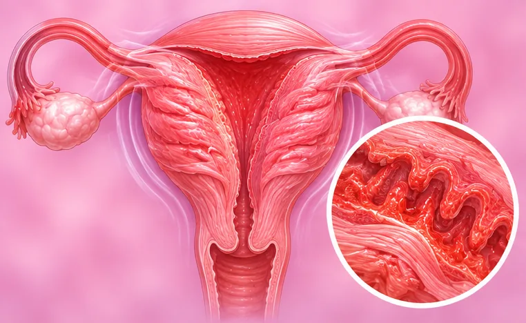

Pelvic adhesions
Bands of scar-like tissue that stick organs in the lower belly together
What it is
Scar-like bands can form between the womb, tubes, ovaries and bowel, so that they stick together. Some people feel nothing; others have pain.
- Lower belly
- After surgery or infection
- Pulling, long-lasting ache
- Which doctor
- Gynaecologist, family doctor
- Common in
- Women who have had belly surgery, pelvic infection or endometriosis
- Contagious
- No
- Course
- The bands do not go away on their own; some people have no trouble at all
Common signs

Dragging ache in the lower bellyPelvic pain Cramps during the periodDysmenorrhoea 
Bloated, gassy bellyBloating Hard to pass stoolsConstipation
Why it happens
After an operationPost-operative
Other causes
- Pelvic infection
- Endometriosis
- Past inflammation of the bowel, such as appendicitis
See a doctor first if
- Sudden severe belly pain with a hard, swollen belly: call 999
- Repeated vomiting, a swollen belly, or not passing wind or stools: go to hospital now
- Fever with belly pain
- Pain with a missed period or a positive pregnancy test
- Pain that is getting worse or stops you doing daily things
If any apply, please see a doctor before a session.
This page is general information. Please keep taking your normal medicine and keep seeing your doctor.
Keep your normal care
Keep taking your normal medicine and keep seeing your doctor. Our session is a gentle support and does not replace medical care.
Looking after yourself

Eat small, regular mealsSmall frequent meals 
Stay active every dayRegular physical activity 
Ask your pharmacistPharmacist advice
More ways to look after yourself
- Tell your doctor about any past belly surgery or pelvic infection
Tell your therapist
- Pregnancy
- Recent back injury or surgery
- Blood-thinning medicine
Your therapist will go through this with you before starting.
Related conditions
References: General information based on public health sources such as Mayo Clinic, NHS, Cleveland Clinic and NCBI StatPearls.
Page updated: 2026-10-31